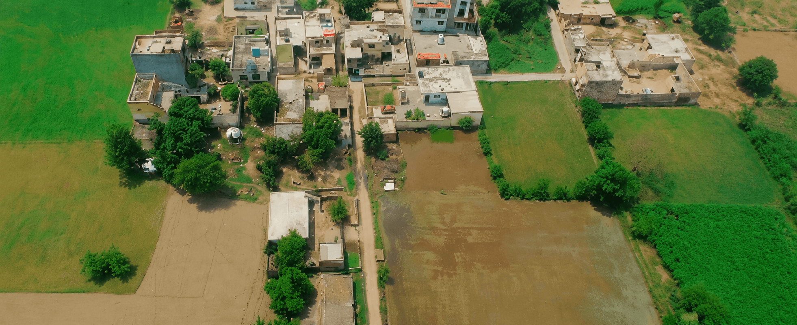
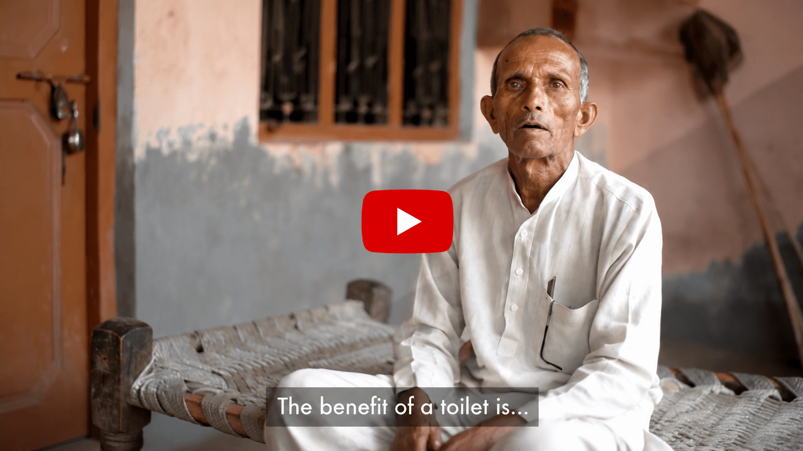

CSR work spans programmes, places and outcomes. The film needed one human thread strong enough to make that scale understandable.
← Back to workReal lives.
Dabur Sundesh · CSR Film
Real lives.
Meaningful change.

Project overview
Document the work.
Centre the people.
Sundesh supports community development initiatives across rural Uttar Pradesh.
The film turns that broad impact into a personal journey, letting real environments and beneficiary voices show how community initiatives affect everyday life.
- Format
- CSR Documentary
- Story
- Beneficiary-led
- Location
- Uttar Pradesh
- Production
- Full Service
The hero film
See the initiative
through real lives.
A documentary-led film shaped around authentic testimony, lived environments and visible community outcomes.
The challenge
Show impact clearly.
Keep dignity intact.
Real beneficiaries and communities needed to be represented accurately, respectfully and without corporate distance.
The creative approach
Listen first.
Let life lead.
Build the narrative through a beneficiary perspective, then connect personal moments to the wider development system.
Observational cinematography, interviews, location sound and measured editing preserve authenticity.
- 01
Enter the community
Establish place through landscapes and lived detail.
- 02
Hear the experience
Let beneficiaries describe change in their own voices.
- 03
Connect the impact
Link individual progress to the wider Sundesh initiatives.
The visual world
Real places.
Real testimony.

The outcome
One human story.
A wider social impact.
End-to-end production brings research, community collaboration, filming and post-production into one respectful account of change.
Authentic voices
Beneficiaries remain the emotional and narrative centre.
Complete production
Script, direction, cinematography, sound and edit work as one system.
Human connection
Personal experience makes institutional impact easier to understand.
Document the initiative.Honour the people.
Have an impact worth documenting?